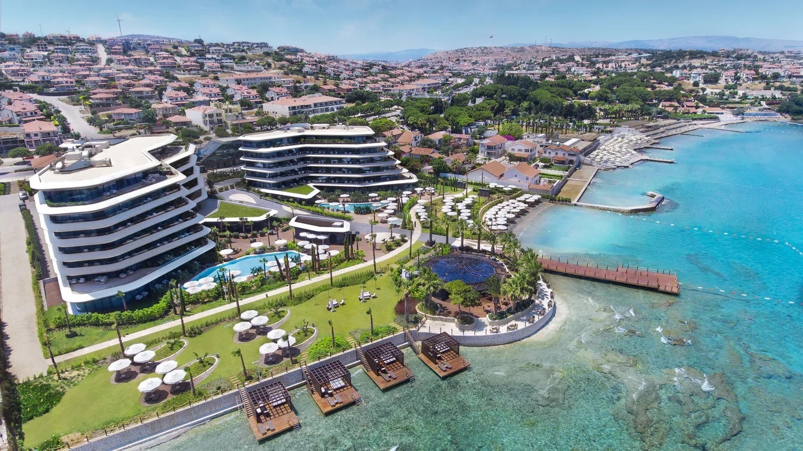

Reges, A Luxury Collection Resort & Spa, Çeşme · Çeşme · İzmir
Reges, A Luxury Collection Resort & Spa, Çeşme
Boyalık Mah 3198 1. Sokak No:5, D:2
35930 Çeşme
İzmir, Türkiye
SPA merkezimizi kullanacağınız zaman, rahat vakit geçirebilmeniz için size bornoz ve terlik sağlanacaktır. SPA seansı boyunca, tek kullanımlık iç çamaşır kullanmanızı tavsiye ederiz. Profesyonel terapistlerimiz uygulamanın odağı olmayan vücut bölgelerini örterek konforlu olmanızı sağlar.
Değerli eşyalarınızı resepsiyonda bulunan emanet kasalarına veya otel odanızın kasasına bırakmanız rica olunur.
Randevu saatinizden en az 15 dakika önce gelmenizi rica ederiz. Geç kalacaksanız, resepsiyon görevlilerimize mümkün olduğu kadar erken haber veriniz. Belirtmek isteriz ki, SPA seansınız geç kalmanız durumunda daha kısa sürecektir. Çünkü; bir sonraki misafirimize gerekli hazırlıkları yapabilmek için hizmetinizi size ayrılan süre içinde tamamlamalıyız.
SPA merkezimizde, sessiz ve huzurlu ortam misafirlerimiz için büyük önem taşımaktadır. Bunu dikkate alarak SPA merkezimize girmeden önce cep telefonunuzu kapatmanızı rica ederiz.
SPA kullanım iptali bildirim süresi, hizmet başlamadan 6 saat öncedir. SPA kullanımına 6 saatten daha az süre kala iptalin bildirilmesi durumunda servisin ücreti tahsil edilecektir.
Grup rezervasyonlarında rezervasyon saatinden 48 saat öncesine kadar ücretsiz iptal edilebilir. 48-6 saat arasında ücretin %50 si, 6 saatten az kala iptal edilmesi durumunda ise toplam tahsil edilir.
Paket kullanımı için yapılan rezervasyonlarda, rezervasyon saatine 6 saatten az kala iptal edilmesi durumunda bakım paketten düşülür.
Tüm SPA bakım seçenekleri menümüzde yer almaktadır. Seçiminizi yaparken destek almak isterseniz, resepsiyonu arayıp çalışanlarımızdan rahatlıkla detaylı bilgi alabilirsiniz. Resepsiyon çalışanı ihtiyacınıza göre bir fikir vererek, doğru seçimi yapmanıza yardımcı olacaktır.
Bakım öncesinde ve sonrasında alkol kullanılmamalıdır.
Sağlığınızla ilgili herhangi bir özel durum varsa veya hamile iseniz, lütfen bunu çalışanlarımıza haber verdiğinizden emin olunuz. Buna göre resepsiyon çalışanı özel durumunuza uygun, en faydalı uygulamayı tavsiye edip, SPA uygulama seçenekleri hakkında sizi bilgilendirecektir.
Sauna ve buhar odası kullanım süresi kişiye göre değişebilir. Amacınız kaslarınızı ısıtıp yumuşatmak ise, saunanın kuru ısısında günlük olarak geçireceğiniz 12-15 dakika yeterlidir. Öte yandan, buhar odasının nemli ortamı nefes kanallarını ve cildin gözeneklerini açmak için idealdir. Bu amaçla 5-6 dakikalık kullanım yeterli olacaktır. Bay-Bayan sauna ve buhar odasında yüzme kıyafeti kullanmanız zorunludur.
Odadaki sıcaklık derecesi ve masaj baskı seviyesi ile ilgili özel tercihleriniz varsa, resepsiyon görevlilerine belirtmekten çekinmeyiniz.
Yaygın kullanılan kredi kartlarını ve nakit ödemeleri kabul etmekteyiz. Eğer otelimizde misafir olarak konaklıyorsanız, SPA hizmetlerinin ücretleri oda hesabınıza eklenebilir.
SPA hizmetleri için gelen konuklarımız en az 18 yaşında olmalıdır.
SPA deneyiminiz, beklentilerinizi karşılamadığı takdirde, tesisimizden ayrılmadan önce SPA müdürümüzü konu hakkında bilgilendirmenizi rica ederiz.